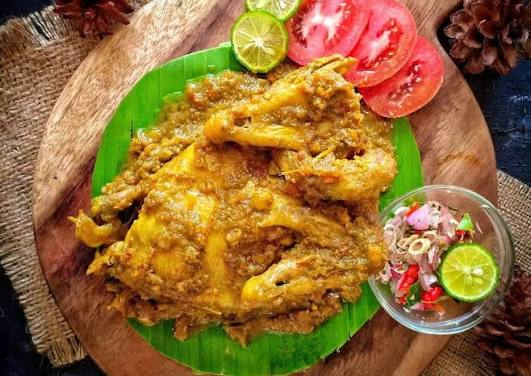
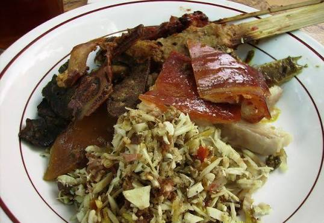
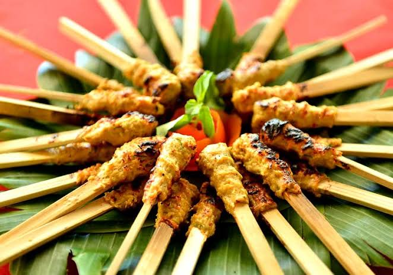
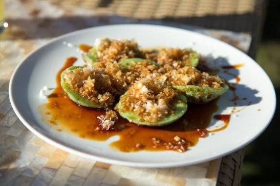
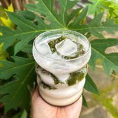

Makanan Berat
Ayam Betutu Gilimanuk
Ayam kampung utuh yang dimasak perlahan selama 8 jam dengan racikan rempah base genep khas Bali.
Rayakan kekayaan cita rasa autentik Pulau Dewata. Nikmati puluhan hidangan legendaris, jajanan tradisional, dan kopi pilihan langsung dari UMKM terbaik Bali.
| Hari & Tanggal | Waktu | Kegiatan Utama | Lokasi |
|---|---|---|---|
| Hari 1 Jumat, 27 Nov |
10.00 – 12.00 WITA | Pembukaan Resmi & Parade Kuliner Tradisional Bali | Panggung Utama |
| 16.00 – 21.00 WITA | Bazar Kuliner UMKM & Live Musik Akustik | Area Tenant | |
| Hari 2 Sabtu, 28 Nov |
11.00 – 14.00 WITA | Demo Masak Lawar Kuwir & Bumbu Base Genep | Zona Demo Masak |
| 17.00 – 22.00 WITA | Malam Kuliner Nusantara & Pertunjukan Tari Kecak | Panggung Utama | |
| Hari 3 Minggu, 29 Nov |
09.00 – 13.00 WITA | Lomba Makan Pedas Sambal Matah & Sambal Embe | Zona Kompetisi |
| 18.00 – 21.00 WITA | Penutupan & Penganugerahan Tenant Terfavorit | Panggung Utama |

Ayam kampung utuh yang dimasak perlahan selama 8 jam dengan racikan rempah base genep khas Bali.

Perpaduan daging entok cincang, sayur nangka muda, dan kelapa parut bakar dengan bumbu rempah kaya rasa.

Olahan ikan tuna laut segar berbumbu rempah yang dililitkan pada batang serai dan dipanggang di atas bara.

Kue tradisional panggang berbahan tepung beras yang disajikan hangat dengan kelapa parut dan saus gula merah.

Minuman tradisional menyegarkan dari ekstrak daun cincau hijau dan daun cemcem khas Desa Penglipuran.
Seduhan biji kopi single origin dataran tinggi Kintamani dengan karakter aroma jeruk segar dan keasaman seimbang.
Bergabunglah menjadi bagian dari perhelatan kuliner terbesar di Bali